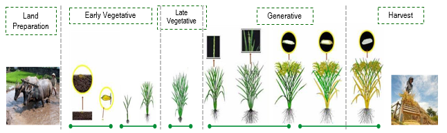
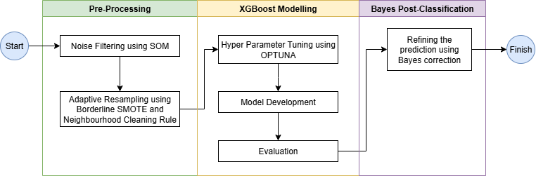
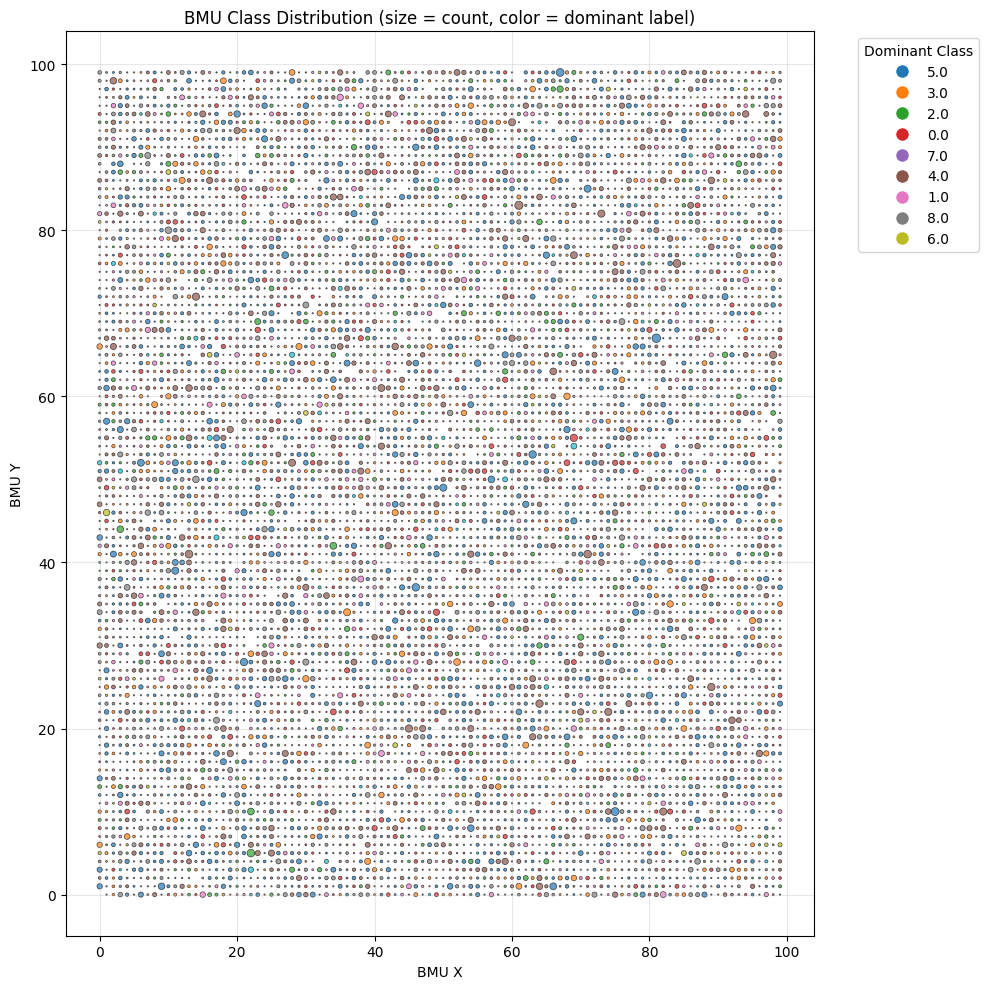
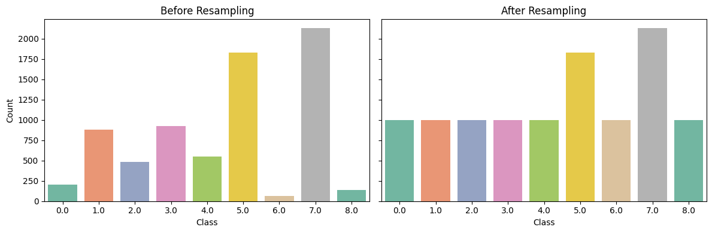
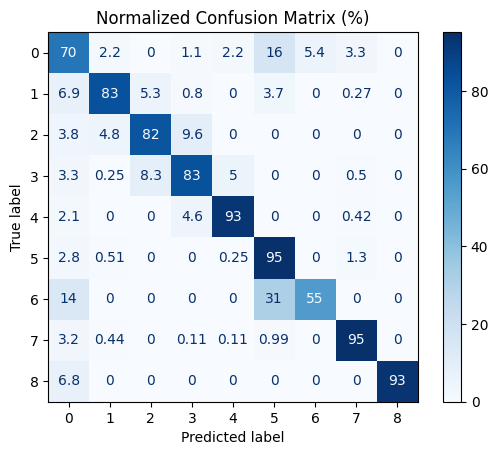

21 Mapping crop phenology in Indonesia
21.1 Background
Paddy data plays a crucial role in shaping national food security policies in Indonesia. The National Long-Term Development Plan 2025–2045 prioritizes the modernization of agricultural data collection, including paddy production [1]. Currently, Statistics Indonesia (BPS) relies on the Area Sampling Frame (ASF) for estimating harvested area and the Crop Cutting Survey for measuring productivity, with final production figures derived from these two sources. However, ASF’s monthly ground-truthing is costly and faces challenges such as remote area access and high surveyor workload.
Satellite imagery presents a more efficient alternative for estimating crop phenology without ground verification, allowing for accurate and cost-effective harvest area estimation. Machine learning models can classify growth stages using satellite data, and Sentinel-1, a radar-based satellite, is particularly effective for agricultural monitoring in cloud-prone regions like Indonesia [2]. Furthermore, Satellite Imagery Time Series (SITS) data enables deeper pattern recognition and temporal analysis compared to traditional cross-sectional approaches [3].
21.2 Data
In this research, Statistics Indonesia-BPS collaborate with the National Research and Innovation Agencies-BRIN for acquiring the Sentinel 1. BRIN give the access of Analysis Ready Data (ARD) data of the Sentinel 1 in 12 days intervals and acquired since 2023 until 2024. The data is further composed into time series data and filtered to the aligned ASF sampling plot, as shown in Figure 21.1.
The ASF sampling plots is a segment with size 300 x 300 meter and divided into 9 subsegments, each has size 100x100 meter. Each sampling plots is monitorized on last week in everymonth by surveyor. They collect the in-situ paddy phenological phase in centroid of the grid. Figure 21.2 represents the paddy phase monitorized monthly.

However, in this study, those classes are modified into several classes detailing the sub-paddy phase compared to the original ASF classes. The following Table 21.1 present the differences of the classes used in the study.
| ASF Label | Description | Study Label | Description |
|---|---|---|---|
| 1 | First Vegetative | 1 | First Vegetative |
| 2 | Late Vegetative | 2 | Late Vegetative |
| 3 | Generatif | 3 | Generatif |
| 4 | Harvest | 4 | Harvest |
| 5 | Bera, which indicated by consecutive harvest | ||
| 5 | Land Preparation/Tillage | 6 | Fallow Land, which indicated by the consecutive tillage |
| 0 | Land Preparation/Tillage | ||
| 6 | Non-Paddy | 7 | Non-Paddy |
| 7 | Non-Vegetation | 8 | Non-Vegetation |
In addition to the Sentinel 1 data, several data are also leveraged for enhancing the quality, such as the elevation for capturing the different pattern of plantation in different elevation level. In details, Table 21.2 present all of the data used in modelling.
| Variable | Description |
|---|---|
| Bulan | Month of observation (1–12) |
| elevation | Elevation of the observation point (meters) |
| VH_0 | VH band (Sentinel-1) at time t (current biweekly) |
| VH_1 | VH band at t-1 (previous biweekly) |
| VH_2 | VH band at t-2 (second previous biweekly) |
| VH_3 | VH band at t-3 (third previous biweekly) |
| VH_4 | VH band at t-4 (fourth previous biweekly) |
| VH_5 | VH band at t-5 (fifth previous biweekly) |
| VH_6 | VH band at t-6 (sixth previous biweekly) |
| VH_7 | VH band at t-7 (seventh previous biweekly) |
| VH_8 | VH band at t-8 (eighth previous biweekly) |
| VH_9 | VH band at t-9 (ninth previous biweekly) |
| VH_10 | VH band at t-10 (tenth previous biweekly) |
| VV_0 | VV band (Sentinel-1) at time t (current biweekly) |
| VV_1 | VV band at t-1 (previous biweekly) |
| VV_2 | VV band at t-2 (second previous biweekly) |
| VV_3 | VV band at t-3 (third previous biweekly) |
| VV_4 | VV band at t-4 (fourth previous biweekly) |
| VV_5 | VV band at t-5 (fifth previous biweekly) |
| VV_6 | VV band at t-6 (sixth previous biweekly) |
| VV_7 | VV band at t-7 (seventh previous biweekly) |
| VV_8 | VV band at t-8 (eighth previous biweekly) |
| VV_9 | VV band at t-9 (ninth previous biweekly) |
| VV_10 | VV band at t-10 (tenth previous biweekly) |
| idkab | Regency identifier code |
21.3 Results
To produce the model for delivering the paddy phenological classification, several procedures are conducted sequentially as depicted in Figure 21.3.

Here, the steps and corresponding results are explained on following subsection.
21.3.1 Preprocessing
Noise Filtering
As we know, the Satellite Image Time Series (SITS) data is inherently messy, often affected by noise, atmospheric disturbances, sensor inconsistencies, etc. Those aspect contributes to the mislabeled or ambiguous observations. If not carefully filtered, these issues can reduce the performance and reliability of machine learning models. One effective approach to address this challenge is to use Self-Organizing Maps (SOM) as a filtering procedure.
SOM can organize complex, high-dimensional time series data into coherent clusters by identifying consistent temporal patterns while exposing anomalies and noisy samples. This enables the construction of a cleaner, higher-quality training dataset. SOM [4] is an unsupervised neural network model that projects multi-dimensional data onto a lower-dimensional (typically two-dimensional) grid, preserving topological relationships and facilitating pattern discovery.
from SOMPipeline import SOMPipeline
som_pipeline = SOMPipeline(som_x=100, som_y=100, sigma=5.0, learning_rate=0.5)
som_pipeline.load_data(pulau='SUMATERA', kdprov='16', base_path='/data/raw')
som_pipeline.train()In this study, the SOM pipeline (SOMPipeline) is implemented with several configuration, as follows: - grid of 100 x 100 neurons, - neighborhood function width (sigma) of 5.0, and - learning rate of 0.5.
After training the SOM, the SOM model achieved a small quantization error of 1.35, indicating good fidelity in mapping the high-dimensional SITS data into the SOM grid, with lower quantization error reflecting better representation of the original input patterns.
som_pipeline.visualize()
The Best Matching Unit (BMU) plot is a diagnostic tool for assessing the quality and structure of Self-Organizing Map (SOM) training. Each point represents a neuron, where the circle size indicates how frequently it was selected as the best match, and the color shows its dominant class. Larger circles suggest neurons that represent more input samples, while smaller ones may indicate less representative or noisy data. As depicted, many neurons likely correspond to noise and should be filtered out to produce cleaner training data.
To filter the data, we select neurons with the most homogeneous class composition—indicated by a high dominance of a single class within the neuron. The cumulative density graph helps determine how many data points are affected at each purity level. In this case, we set a 50% threshold for class dominance and remove neurons with a lower value. From the remaining neurons, we retain only the data points that belong to the dominant class of each neuron.
import seaborn as sns
import matplotlib.pyplot as plt
def plot_image_compare(df_all, df_filtered):
fig, axs = plt.subplots(1, 2, figsize=(20, 8))
# First plot — All Data
heatmap_data_all = df_all.pivot_table(index='idkab', columns='recode', aggfunc='size', fill_value=0)
sns.heatmap(heatmap_data_all, annot=True, fmt='d', cmap='viridis', cbar_kws={'label': 'Count'}, ax=axs[0])
axs[0].set_title('All Data: Heatmap of Count per idkab')
axs[0].set_xlabel('Classes')
axs[0].set_ylabel('idkab')
# Second plot — Filtered Data
heatmap_data_filtered = df_filtered.pivot_table(index='idkab', columns='recode', aggfunc='size', fill_value=0)
sns.heatmap(heatmap_data_filtered, annot=True, fmt='d', cmap='viridis', cbar_kws={'label': 'Count'}, ax=axs[1])
axs[1].set_title('Filtered Data (after SOM): Heatmap of Count per idkab')
axs[1].set_xlabel('Classes')
axs[1].set_ylabel('idkab')
plt.tight_layout()
plt.show()
df_all, df_filtered = som_pipeline.export(dominant_threshold=50)
df_filtered.to_csv('data_for_modelling.csv',index=False)
plot_image_compare(df_all, df_filtered)
The Figure 21.5 compares the data before (left) and after (right) SOM filtering. It shows that the filtering process reduces the dataset, likely by removing noisy data. Class 6 appears to be the most affected, with only around 102 rows remaining after the SOM filtering.
Resampling Approach
To address class imbalance in Satellite Image Time Series (SITS), we employed an adaptive resampling strategy based on class size.
For minority classes (<1000 samples), we applied Borderline-SMOTE to generate synthetic samples near class boundaries, improving model sensitivity in ambiguous regions. This was repeated until each class reached 1000 samples, ensuring balanced representation. Borderline-SMOTE was chosen over standard SMOTE for its effectiveness in handling class overlap common in SITS-based remote sensing data.
For overrepresented classes, Neighbourhood Cleaning Rule (NCL) was applied to remove noisy or ambiguous majority instances, reducing bias and sharpening class boundaries. NCL addresses issues like mislabeled or inconsistent samples caused by mixed pixels, clouds, or seasonal changes in SITS.
Combined with Borderline-SMOTE, this adaptive resampling creates a balanced, cleaner training set, improving model generalization and robustness in imbalanced, high-dimensional remote sensing data.
def plot_resampling_comparison(y_train_original, y_resampled):
# Force both to categorical with same order
classes = sorted(set(y_train_original) | set(y_resampled))
y_train_original_cat = pd.Categorical(y_train_original, categories=classes, ordered=True)
y_resampled_cat = pd.Categorical(y_resampled, categories=classes, ordered=True)
# Use your palette
palette = sns.color_palette("Set2")
fig, axs = plt.subplots(1, 2, figsize=(12, 4), sharey=True)
# Original y_train
sns.countplot(x=y_train_original_cat, ax=axs[0], palette=palette)
axs[0].set_title("Before Resampling")
axs[0].set_xlabel("Class")
axs[0].set_ylabel("Count")
# Resampled y_train
sns.countplot(x=y_resampled_cat, ax=axs[1], palette=palette)
axs[1].set_title("After Resampling")
axs[1].set_xlabel("Class")
plt.tight_layout()
plt.show()import numpy as np
import pandas as pd
from AdaptiveResampler import AdaptiveResampler
from XGBMultiClassPipeline import XGBMultiClassPipeline
df_filtered = pd.read_csv('data_for_modelling.csv')
y = df_filtered['recode']
X = df_filtered[['Bulan', 'elevation', 'VH_10', 'VH_9', 'VH_8',
'VH_7', 'VH_6', 'VH_5', 'VH_4', 'VH_3', 'VH_2', 'VH_1', 'VH_0', 'VV_10',
'VV_9', 'VV_8', 'VV_7', 'VV_6', 'VV_5', 'VV_4', 'VV_3', 'VV_2', 'VV_1',
'VV_0', 'idkab']]
# Define pipeline
pipeline = XGBMultiClassPipeline(num_class=len(np.unique(y)))
# Split data in train / test / validation
X_train, X_val, y_train, y_val = pipeline.get_train_validation_split(X, y, test_size=0.3)
# Define resampler
resampler = AdaptiveResampler(minority_thresh=1000, majority_thresh=5000)
# Fit resample
X_resampled, y_resampled = resampler.fit_resample(X_train, y_train)
# Plot results
plot_resampling_comparison(y_train, y_resampled)
The Figure 21.6 compares class distributions before and after applying the adaptive resampling strategy. In the original (Before Resampling) distribution, substantial class imbalance is evident—with classes 5 and 7 heavily overrepresented, and classes 0, 6, and 8 severely underrepresented. After resampling, minority classes (especially class 0 and class 8) show significant increases, while class 6 is slightly improved, reflecting the impact of Borderline-SMOTE for classes with fewer than 1000 samples. At the same time, overrepresented classes (5 and 7) are reduced but not fully equalized, indicating that Neighbourhood Cleaning Rule (NCL) has effectively filtered out noisy or borderline instances without distorting the overall class structure.
21.3.2 Model Development
After the preprocessing steps are conducted, the next step is produce the model for classification. In this study, XGBoost is selected as the classification algorithm. XGBoost (Extreme Gradient Boosting) is a scalable, high-performance gradient boosting framework based on decision trees, designed to optimize both speed and predictive accuracy [5]. It builds an ensemble of trees in a sequential manner, where each new tree corrects the errors of the previous ones, and leverages advanced regularization techniques (L1 and L2), shrinkage, and sparsity-aware algorithms to prevent overfitting. Compared to traditional methods such as Random Forest, which builds multiple independent trees in parallel, XGBoost typically achieves superior performance with fewer trees and lower computational cost, especially on high-dimensional, noisy, or imbalanced data.
Hyperparameter Tuning
To produce reliable, accurate, and robust model, selecting the hyperparameter is crucial steps. Here, the hyperparameter tuning is performed using Optuna [6], which optimizes key XGBoost parameters (e.g., max_depth, learning_rate, reg_lambda, min_child_weight, and gamma—by sampling) from predefined ranges via the TPE (Tree-structured Parzen Estimator) algorithm [7]. Each trial is evaluated using Stratified K-Fold cross-validation and macro F1-score to ensure bala)nced class performance [8]. Early stopping is applied during model training and across trials (with a 10-trial patience) to prevent overfitting and improve efficiency.
import optuna
study = optuna.create_study(direction='maximize')
# Attach early stopping callback
early_stop = pipeline.EarlyStoppingCallback(patience = 10)
# Run optimization
study.optimize(
lambda trial: pipeline.objective(trial, X_resampled, y_resampled),
n_trials=50,
callbacks=[early_stop]
)Based on the trials, the best hyperparameters are shown in Table 21.3:
| Hyperparameter | Value | Description / Effect |
|---|---|---|
| max_depth | 9 | Controls the maximum depth of trees; deeper trees can capture more complex patterns but risk overfitting. |
| learning_rate | 0.0752 | Shrinks the contribution of each tree; lower values require more trees but improve generalization. |
| reg_lambda | 3.472 | L2 regularization term on weights; higher values increase regularization to prevent overfitting. |
| min_child_weight | 72 | Minimum sum of instance weight (hessian) needed in a child; higher values make the model more conservative. |
| gamma | 0.1028 | Minimum loss reduction required to make a further partition; larger values make the tree pruning more conservative. |
import pickle
with open("best_params_fin.pkl", "wb") as f:
pickle.dump(study.best_params, f)Modelling
After the hyperparameter tuned, the next part is train the model, evaluating the results. The model is trained using the best hyperparameters with early stopping to prevent overfitting and ensure efficient learning. It uses multi-class classification and is optimized to handle class imbalances in the data. The training process evaluates performance at each step and stops automatically when improvements plateau. After training, the model is assessed on the test set using a several validation index. Additionally, to refine predictions, optimal thresholds are applied based on precision-recall performance. Final evaluation includes accuracy, F1-scores, and AUC metrics, offering a balanced view of model performance across all classes..
import pickle
with open("best_params_fin.pkl", "rb") as f:
best_params = pickle.load(f)
pipeline.train(X_resampled, y_resampled, best_params=best_params)
results = pipeline.evaluate(X_val, y_val, output_file='confusion_matrix')
results['metrics']{'val_accuracy': 0.8247489471979268,
'val_f1_macro': np.float64(0.7492888552439827),
'val_f1_micro': np.float64(0.8247489471979268),
'val_auc': np.float64(0.9695775603130876),
'val_pr_auc': np.float64(0.8048938208240811)}The model achieved strong overall performance on the validation set, with an accuracy of 82.4% and a matching micro F1-score of 82.4%, indicating high correctness across all classes. The macro F1-score of 74.9% further demonstrates balanced performance between majority and minority classes, suggesting that class imbalance was effectively addressed. The high AUC of 0.9695 reflects excellent ability to distinguish between classes, while the PR-AUC of 0.8048 indicates strong precision-recall trade-offs.
The best-performing classes include “Non-Paddy” (class 7) and “Non-Vegetation” (class 8), both with precision and recall exceeding 0.85, demonstrating clear spectral and temporal separability in the Satellite Image Time Series (SITS) data. Additionally, “Harvest” (class 4) and “Bera” (class 5) phases exhibit strong classification performance, likely due to their distinctive phenological signatures. In contrast, the model shows relatively lower recall for “Land Preparation/Tillage” (class 0, recall 0.58) and “Fallow Land” (class 6, recall 0.43), with common misclassifications occurring toward vegetative stages. This is consistent with known challenges in SITS-based crop monitoring, where transitional phases exhibit spectral ambiguity and temporal overlap (e.g., tillage may coincide with early vegetation stages). The confusion matrix further shows that most misclassifications occur between adjacent or phenologically related classes (e.g., “First Vegetative” to “Late Vegetative”), which may be acceptable in practical applications where approximate phase tracking is sufficient. Overall, these results confirm that the combination of adaptive resampling and tuned XGBoost modeling provides a robust framework for multi-class land cover classification from SITS data, with strong performance on dominant classes and reasonable accuracy across minority and transitional phases.
with open("best_pipeline_fin.pkl", "wb") as f:
pickle.dump(results, f)21.3.3 C. Bayes Post-Classification
Given the natural characteristics of phenologycal phase, sequential rule is emeged to ensure coherency. For instance, the Late Vegetative phase can not be emerged unless the previous month observation is First Vegetative. This implies that the Current Month Phase is influeced by Previous Month Phase. Based on this idea, a Bayes Post-Classification can be formulated for enhancing the quality of modelling with following procedure:
\[ \begin{aligned} P(\text{Current Class} \mid \text{XGB Proba}, \text{Previous Class}) &\propto P(\text{XGB Proba} \mid \text{Current Class}) \\ &\times P(\text{Current Class} \mid \text{Previous Class}) \end{aligned} \]
Likelihood:
\(P(\text{XGB Proba} \mid \text{Current Class})\)
This represents the probability of observing the XGBoost predicted probabilities given the current class. It is derived directly from the XGBoost classifier’s output (predict_proba).
Prior:
\(P(\text{Current Class} \mid \text{Previous Class})\)
This is the probability of the current class conditioned on the previous class, estimated from historical data (e.g., frequencies computed over the last 3 years).
Posterior:
\(P(\text{Current Class} \mid \text{XGB Proba}, \text{Previous Class})\)
This is the updated belief about the current class combining the likelihood (model evidence) and the prior (historical transitions).
In other words,
\[
\text{Posterior} \propto \text{Likelihood} \times \text{Prior}
\]
Summary:
- The likelihood comes from the XGBoost model’s predicted probabilities.
- The prior captures temporal dependencies from historical class transitions.
- The posterior combines both to provide an improved class prediction.
def add_prev_recode(df, id_col='idsubsegmen', time_col_month='Bulan', time_col_year='Tahun', target_col='recode'):
df = df.copy()
df.sort_values(by=[id_col, time_col_year, time_col_month], inplace=True)
# Shift recode per group (idsubsegmen)
df['prev_recode'] = (
df.groupby(id_col)[target_col]
.shift(1)
)
# Shift also Tahun and Bulan per group to compare whether prev record is in previous month-year
df['prev_year'] = df.groupby(id_col)[time_col_year].shift(1)
df['prev_month'] = df.groupby(id_col)[time_col_month].shift(1)
# Compute expected previous month and year
df['expected_prev_month'] = df[time_col_month] - 1
df['expected_prev_year'] = df[time_col_year]
# If current month is January → previous month should be December of previous year
jan_mask = df['expected_prev_month'] == 0
df.loc[jan_mask, 'expected_prev_month'] = 12
df.loc[jan_mask, 'expected_prev_year'] -= 1
# Keep only valid previous recode (when prev month and year match expected)
valid_prev = (df['prev_month'] == df['expected_prev_month']) & (df['prev_year'] == df['expected_prev_year'])
df.loc[~valid_prev, 'prev_recode'] = np.nan
# Optional: clean temp columns
df.drop(columns=['prev_year', 'prev_month', 'expected_prev_month', 'expected_prev_year'], inplace=True)
return dfimport xgboost as xgb
from sklearn.metrics import (
confusion_matrix, ConfusionMatrixDisplay, classification_report)
full_data = pd.read_csv(f'/data/ksa/00_Code_2025/data_16_WO_cluster.csv', delimiter=';')
full_data = add_prev_recode(full_data)
df_validation = X_val.copy()
df_validation['Recode'] = y_val
df_validation = df_validation.merge(full_data)
with open("results_conditional_probs.pkl", "rb") as f:
conditional_probs = pickle.load(f)
df_recode_given_prev=conditional_probs['16']['prob']['P_cond_prev_transaction']
df_recode_given_prev_long = (
df_recode_given_prev
.reset_index() # makes idkab and prev_recode columns instead of index
.melt(id_vars=["idkab", "prev_recode"],
var_name="recode",
value_name="P_given_prev")
)
df_recode_given_prev_long['idkab'] = df_recode_given_prev_long['idkab'].astype("int")
dfm_predict = xgb.DMatrix(df_validation[X_val.columns], label=df_validation["recode"], enable_categorical=True)
dfm_predict_proba = pipeline.model.predict(dfm_predict)
df_validation[[f'Class_{i}' for i in range(0,9)]] = dfm_predict_proba
df_validation['recode_pred'] = dfm_predict_proba.argmax(axis=1)from BayesPostClassificationPipeline import BayesPostClassificationPipeline
# Step 1: Create pipeline
bpost_pipeline = BayesPostClassificationPipeline(
df_prior = df_recode_given_prev_long,
id_col = 'idkab',
prev_recode_col = 'prev_recode',
recode_col = 'recode',
prior_col = 'P_given_prev',
num_classes = 9
)
# Step 2: Apply the prior/posterior logic
df_val_with_prior_posterior = bpost_pipeline.incorporate_prior_and_posterior(df_validation)
# Step 3: Evaluate the result
df_val_with_prior_posterior = bpost_pipeline.evaluate(df_val_with_prior_posterior)
The application of Bayes PostClassification significantly improved both overall model performance and class-level consistency. Before post-processing, the classifier achieved an accuracy of 82% and a macro F1-score of 74.9%. After refinement, the accuracy increased to 90% and the macro F1-score rose to 83.0%, indicating a substantial reduction in misclassifications—particularly in ambiguous or transitional growth phases.
Notable improvements were observed across several classes. For Class 0 (Land Preparation/Tillage), recall increased from 0.58 to 0.70. For Classes 1 (First Vegetative), 2 (Late Vegetative), and 3 (Generatif), accuracy improved from below 80% to 83%, suggesting that the Bayes filter effectively reduced over-smoothing between neighboring growth stages. The most significant gain was seen in Class 4 (Harvest), where recall jumped from 0.82 to 0.93 and precision improved from 0.79 to 0.90. This greatly reduced false positives being assigned to similar phases such as “Bera” or “Late Vegetative”.
Overall, the Bayes-based post-processing acted as a temporal prior filter, correcting model uncertainty and aligning predictions more closely with realistic crop growth transitions—an essential enhancement for fine-grained agricultural monitoring.
21.4 Conclusions
In this study, we presented a complete workflow for analyzing paddy phenological phases using satellite imagery and machine learning. The process is structured into three main stages: preprocessing, modeling, and refinement. The preprocessing phase includes noise filtering using Self-Organizing Maps (SOM) and adaptive resampling. The modeling phase involves hyperparameter tuning, model development, and performance evaluation. Finally, the refinement phase applies Bayesian post-processing to improve classification accuracy.
The results demonstrate that a modernized approach to monitoring paddy phenology—integrating remote sensing and machine learning—can be effectively implemented to enhance accuracy and reliability in capturing crop growth dynamics.
References
[1]
U. Faoziyah, M. F. Rosyaridho, and R. Panggabean, “Unearthing agricultural land use dynamics in indonesia: Between food security and policy interventions,” Land, vol. 13, no. 12, p. 2030, 2024, doi: 10.3390/land13122030.
[2]
H. Muradi et al., “Rice phenology classification model based on sentinel-1 using machine learning method on google earth engine,” Canadian Journal of Remote Sensing, vol. 50, no. 1, 2024, doi: 10.1080/07038992.2024.2293843.
[3]
R. Simoes et al., “Satellite image time series analysis for big earth observation data,” Remote Sensing, vol. 13, no. 13, p. 2428, 2021, doi: 10.3390/rs13132428.
[4]
T. Kohonen, “Essentials of the self-organizing map,” Neural Networks, vol. 37, pp. 52–65, 2013, doi: 10.1016/j.neunet.2012.09.018.
[5]
T. Chen and C. Guestrin, “XGBoost: A Scalable Tree Boosting System,” in Proceedings of the 22nd ACM SIGKDD International Conference on Knowledge Discovery and Data Mining, 2016, pp. 785–794, doi: 10.1145/2939672.2939785.
[6]
T. Akiba, S. Sano, T. Yanase, T. Ohta, and M. Koyama, “Optuna: A next-generation hyperparameter optimization framework,” Proceedings of the 25th ACM SIGKDD International Conference on Knowledge Discovery & Data Mining, pp. 2623–2631, 2019.
[7]
X. Bouthillier, P. Vincent, and A. Drouin, “Accounting for variance in machine learning benchmarks,” Journal of Machine Learning Research, vol. 22, pp. 1–62, 2021.
[8]
A. Fernández, S. García, M. Galar, R. C. Prati, B. Krawczyk, and F. Herrera, “Learning from imbalanced data sets,” Springer, 2018.